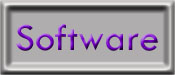
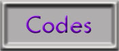
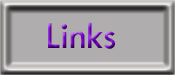

|  | Software: de zelfgemaakte programma's met Visual Basic 6. Er zijn een heleboel nieuwkomers bij, maar om daar meer over te weten, neem je best een kijkje bij het nieuws |
|  | Source codes: in deze selectie vind je voorbeeldprogramma's, modules & klassen. Dit zijn codes die ik meestal zelf heb gemaakt of ineengestoken, om iemand anders uit 'nood' te helpen. Enjoy! |
 |
Nieuws: hier zijn de laatste nieuwtjes over mijn (nieuwe) software of updates, additionele informatie etc. Er wordt ok gewerkt aan een archief voor het oudere nieuws. |
|  | Links: Verschillende links die uiteraard te maken hebben met het ontwikkelen van software zoals Visual Basic, maar ook C++, JavaScripts & JavaApplets horen daarbij.... |